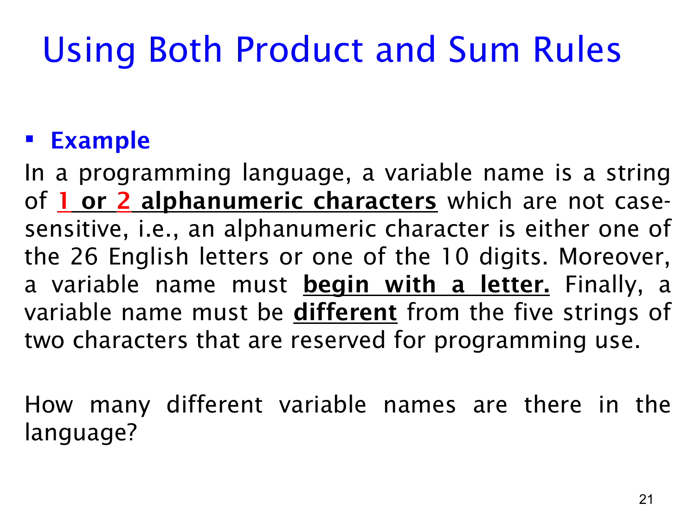

课件第 21 页讲解原文
查看这一页课件

变量名计数：先按长度分类，再逐位选择
这一页给出一个假想编程语言的命名规则。变量名长度只能是 1 或 2，每个字符来自英文字母或数字，不区分大小写，而且第一个字符必须是字母。另外，有 5 个长度为 2 的保留字符串不能用作变量名。
alphanumeric 表示“字母或数字”。因为不区分大小写，A 和 a 不算两个不同选择，所以普通字符位置共有 26+10=36 种选择；开头位置则只有 26 种。
先按长度把结果分为两类。这两类不会重叠：一个字符串不可能同时长 1 和长 2。
长度为 1 时，这唯一的字符就是首字符，只能选字母，因此有 26 个名字。例如 A 合法，而 7 不合法。
长度为 2 时，先选首字符，有 26 种；再选第二个字符，可以是字母或数字，有 36 种。暂时不考虑保留字，有：
26×36=936
个候选名字。例如 A7 符合结构，7A 不符合。按题目的通常含义，这 5 个保留字符串本来都属于上述候选名字，而且彼此不同，因此要扣除 5 个，剩下 931 个。
最后用加法法则合并两种长度：
26+(26×36−5)=957.
这道题把三种动作组合起来：分类用加法，填写位置用乘法，排除已计入的禁用结果用减法。 扣除保留字时要确认它们确实曾被计入；本来就不符合首字母规则的字符串，不应再重复扣除。